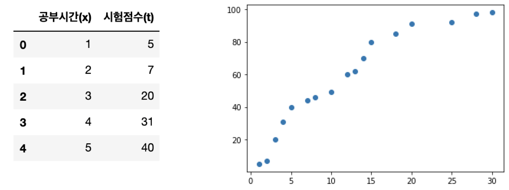
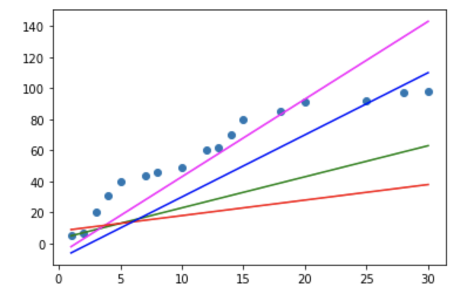
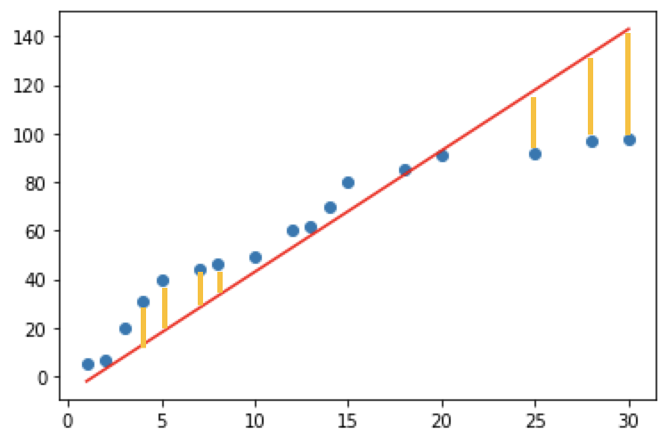
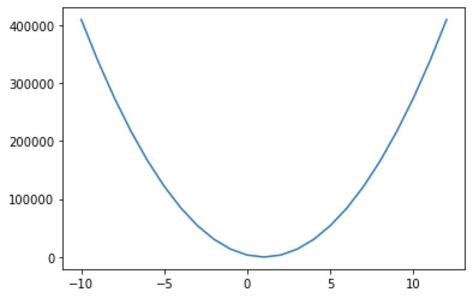

[Python] Machin Learning
Machine Learning
Machine Learning 은 학습방법에 따라서 크게 4가지로 분류합니다.
-
지도학습(Supervised Learning)
-
비지도학습(Unsupervised Learning)
-
준지도학습(SemiSupervised Learning)
-
강화학습(Reinforcement Learning)
간단한 이론부터 먼저 알아보고 세부적으로 알아보도록 하겠습니다.
지도학습 (Supervised Learning)
지도학습은 학습에 사용되는 데이터와 그 정답(label)을 이용해서 데이터의 특성과 분포를 학습하고 미래결과를 예측하는 방법
-
Regression(회귀)
-
학습된 결과를 바탕은 연속적인 숫자값을 예측
-
Linear Regression(선형회귀) : ‘얼마나’를 예측하는 방법
-
-
Classification(분류)
- binary classification (둘 중 하나를 예측)
- multinomial classification (여러 개 중 하나를 예측)
비지도학습 (unsuperviese learning)
비지도학습은 학습에 사용되는 데이터가 label 이 없는 데이터가 사용됩니다. 이 부분이 지도학습과 가장 큰 차이입니다.
비지도학습은 정답(label)이 없는 데이터만을 이용하기 떄문에 입력값 자체가 가지고 있는 특성과 분포를 이용해서 Grouping하는 Clustering(군집화)하는데 주로 사용합니다.
Classification(분류) VS clustering(군집화)
-
Clustering(군집화) : 비슷한 데이터끼리 Grouping 해주는 것
-
Classification(분류) : 어떤 분류에 속하는가에 대한 정답을 예측.
준지도학습 (SemiSupervised Learning)
지도학습 + 비지도학습 데이터의 일부분만 label 이 제공되는 경우!!
강화학습 (Reinforcement Learning)
위에서 말한 3가지 방식과는 완전히 다른 학습 방법 Agent, Environment, Action, Reward 개념을 이용 게임쪽에서 많이 사용되는 학습방법 google 알파고의 메인 알고리즘이 바로 이 강화학습.
많은 학습방법이 있지만 이번시간에는 지도학습에 대하여 알아보도록 하겠습니다. 먼저 실습에 앞서 미분에 대하여 간략하게 정리하고 넘어가도록 하겠습니다.
미분
어떤 함수의 정의역 속 각점에서 독립변수의 값의 변화량과 함수 값의 변화량 비율의 극한 혹은 극한의 집합. 치역으로 가지는 새로운 함수입니다.
미분에는 크게 두가지 방식이 있습니다. 해석미분과 수치미분이 있습니다.
해석 미분 (Anaytical differentiation)
종이와 펜을 가지고 논리적인 전개로 미분을 수행하는 해석미분
수치미분
해석미분으로 문제를 해결할 수 없을때 수치적 근사값을 이용해서 미분을 수행하는 방법입니다. 한가지 조심해야할점은 delta_x라고 0과 근사한 값을 이용해야 하는데 delta_x는 소수점 8자리 이하로 내려가면 안됩니다. (파이썬에러) 그렇기 때문에 일반적으로 delta_x를 0.00001 수준으로 설정해서 수치미분을 수행합니다.
수치미분에는 전형차분, 후향차분, 중앙차분이 있습니다. 이번시간에는 중앙차분 방식을 사용하도록 하겠습니다.
파이썬 코드를 통하여 수치미분을 알아보도록 하겠습니다.
# f(x) = x^2
# f'(5) = 10
def numerical_derivative(f, x):
# f : 미분하려는 함수가 들어와요!
# x : 미분값을 알고자하는 입력값.
# delta_x는 1e-4 ~ 1e-6 정도의 수로 설정하면 됩니다 !! (1e-4)
# delta_x는 0과 가까운 작은값을 이용하고 1e-8이하는 사용하면 안됩니다.
delta_x = 1e-4
# 중앙차분
return (f(x+delta_x) -f(x-delta_x)) / (2*delta_x)
# 미분하려는 함수를 만들어요!
# f(x) = x^2
def my_func(x):
return x**2
# 함수 f(x) = x^2 에서 미분계수 f'(5)를 구하세요!
result = numerical_derivative(my_func, 5)
print(result) # 9.9999999
그렇다면 변수가 한 가지가 아닌 다변수 함수에 대한 미분을 해보도록 하겠습니다. 이번에는 편미분을 이용하여 코드로 구현해보도록 하겠습니다.
# f(x,y) = 2x +3xy + y^3
# f'(1.0, 2.0) == (8, 15)
# 수치미문 최종코드
import numpy as np
def numerical_derivative(f, x):
# f : 미분하려고 하는 다변수 함수
# x : 모든 변수를 포함하고 있어야 해요! ndarray (차원상관없이)
delta_x = 1e-4
# derivative_x = np.zeros((3,4))
derivative_x = np.zeros_like(x) # 미분한 결과를 저장하는 ndarray
# iterator 를 이용해서 입력변수 x에 대해 편미분을 수행
it = np.nditer(x, flags=['multi_index'])
while not it.finished:
idx = it.multi_index # iterator의 현재 index를 추출(tuple로 추출)
# 현재 같의 값을 어딘가에 잠시 저장해야해요!!
# 해당되는 x에 맞춰서 넣어줘야 하기떄문에 그렇습니다.
tmp = x[idx]
x[idx]= tmp + delta_x
fx_plus_delta = f(x) # f(x + delta_x)
x[idx]= tmp - delta_x
fx_minus_delta = f(x) # f(x - delta_x)
derivative_x[idx] = (fx_plus_delta - fx_minus_delta) / (2 * delta_x)
x[idx] = tmp # 데이터를 원상복구
it.iternext()
return derivative_x
def my_func(x):
return x**2
## f(x) = x^2에서 f'(3) ??
result = numerical_derivative(my_func,np.array([3.0]))
print(result) # [6.]
# 이변수 함수를 미분해 보아요!
# f(x,y) = 2x + 3xy +np.power(y,3)
def my_func(input_data):
x = input_data[0]
y = input_data[1]
return 2*x + 3*x*y + np.power(y,3)
result = numerical_derivative(my_func, np.array([1.0,2.0]))
print(result) # [ 8. 15.00000001]
Regression
Linear Regression 에 대하여 알아보도록 하겠습니다. Linear Regression란 Training Data Set 을 이용해서 학습된 결과를 만드록 연속적인 숫자값을 예측하는 것을 의미합니다.
간단한 예제를 통하여 알아보도록 하겠습니다.
# 문제를 단순화 시켜서 다음의 데이터를 이용해 보아요!
# 공부시간(x), 시험점수 (t)를 이용해서 데이터를 표현해 보아요!
# 이 데이터를 2차원 평면에 scatter(산점도)를 이용해서 표현해 보아요!!
import numpy as np
import pandas as pd
import matplotlib.pyplot as plt
data = {'공부시간(x)' : [1,2,3,4,5,7,8,10,12,13,14,15,18,20,25,28,30],
'시험점수(t)':[5,7,20,31,40,44,46,49,60,62,70,80,85,91,92,97,98]}
df = pd.DataFrame(data)
display(df.head())
plt.scatter(df['공부시간(x)'], data['시험점수(t)'])

이 데이터를 이용해서 직선 몇가지를 그려보도록 하겠습니다. 직선이니까 y = ax+b (a는 기울기(slop), b는 절편(intercept)) 로 표현 하겠습니다.
import numpy as np
import pandas as pd
import matplotlib.pyplot as plt
data = {'공부시간(x)' : [1,2,3,4,5,7,8,10,12,13,14,15,18,20,25,28,30],
'시험점수(t)':[5,7,20,31,40,44,46,49,60,62,70,80,85,91,92,97,98]}
df = pd.DataFrame(data)
display(df.head())
plt.scatter(df['공부시간(x)'], df['시험점수(t)'])
# 직선ㅇ르 표현하는게.. y = ax +b
plt.plot(df['공부시간(x)'],df['공부시간(x)']*2 +3, color='g')
plt.plot(df['공부시간(x)'],df['공부시간(x)']*5 -7, color='magenta')
plt.plot(df['공부시간(x)'],df['공부시간(x)'] +8, color='r')
plt.plot(df['공부시간(x)'],df['공부시간(x)']*4 -10, color='b')
plt.show()

초기의 기울기 a와 절편 b는 랜덤하게 결정되고 그 이후 우리가 가지는 데이터의 특성을 가장 잘 표현하기 위한 직선을 찾아가는 과정이 진행되게 됩니다. 이 과정을 우리는 학습(learning)이라고 합니다.
결국은 데이터를 가장 잘 표현하는 직선(y)를 만들 수 있고 이 직선을 predictive model이라고 합니다.
수학과의 표기상의 차이점은 y = ax +b 수학에서 이렇게 표현하지만 regression에서는 y = Wx + b (W : weight, 가중치) (b : bias, 바이어스)로 표현합니다.
오차
하지만 아무래도 직선으로 표시하다 보면 근사치를 구하기 때문에 정확하게 일치하지 않고 오차가 발생합니다. 이것을 그림으로 표현하면 하기그림과 같습니다.

노란색의 y값 차이만큼의 수치차이가 나게되며 이것을 수식으로 표현하면 n번째 위치에서의 오차는 tn - (wxn + b)이 됩니다. 하지만 부호가 존재하기 때문에 실직적으로 정확한 오차를 판별하기 어려우며 이를 해결하기 위해 최소제곱법으로 오차표현하면 [tn - (wxn + b)]^2 / n 입니다.
오차와 y = Wx + b (W : weight, 가중치) (b : bias, 바이어스) 의 관계에 대하여 다시 함수식을 나타낼 수 있는데 이것은 손실함수(loss function)이라고 부르며 이것을 수식으로 나타내면 하기와 같습니다.
import numpy as np
import matplotlib.pyplot as plt
# training data set
x = np.arange(1,101)
t = np.arange(1,101)
# b를 제외하고 w와 loss의 관계에 대하여 알아보아요
W = np.arange(-10,13)
loss = []
for tmp in W:
loss.append(np.power(t-tmp*x,2).mean())
plt.plot(W, loss)
plt.show()
